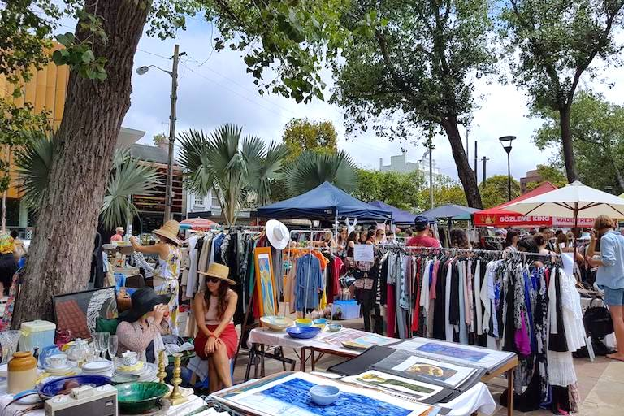

Feira de Trocas
A Feira de Trocas é um evento onde as prateleiras não têm preço, mas sim histórias. É um lugar onde roupas, livros, brinquedos e outros itens ganham novos significados nas mãos de diferentes pessoas.
Objetivos do Projeto:
1. Reduzir o Desperdício: Acreditamos que cada peça de roupa, livro ou brinquedo tem valor. Em vez de descartá-los, oferecemos uma segunda chance. A Feira de Trocas é um antídoto contra o desperdício, incentivando a reutilização e prolongando a vida útil dos objetos.
2. Promover a Economia Circular: A economia circular é um ciclo virtuoso: compartilhamos, reutilizamos e transformamos. Na Feira, os participantes se tornam parte desse ciclo, criando uma comunidade de troca e respeito pelo meio ambiente.
3. Conectar Pessoas: A Feira não é apenas sobre coisas materiais; é sobre conexões humanas. Aqui, histórias são compartilhadas, amizades são forjadas e sorrisos são trocados junto com os itens.
4. Inspirar Mudanças de Hábitos: Ao participar da Feira, as pessoas repensam suas escolhas de consumo. O que antes era descartado agora é valorizado. Essa mudança de perspectiva é poderosa.
Se você deseja fazer parte desse projeto incrível, pode:
Participar: Visite a Feira de Trocas em nossos eventos regulares. Traga itens que você não usa mais e escolha outros que despertem sua curiosidade.
Ser Voluntário: Ajude a organizar os eventos, classificar os itens e criar um ambiente acolhedor. Se você acredita na causa, junte-se à nossa equipe.
Na Feira de Trocas, cada objeto tem uma história. Cada troca é uma oportunidade de criar novas narrativas. Venha fazer parte dessa rede de compartilhamento e transformação!